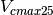

9. Stomatal Resistance and Photosynthesis¶
9.1. Summary of CLM5.0 updates relative to the CLM4.5¶
We describe here the complete photosynthesis and stomatal conductance parameterizations that appear in CLM5.0. Corresponding information for CLM4.5 appeared in the CLM4.5 Technical Note (Oleson et al. 2013).
CLM5 includes the following new changes to photosynthesis and stomatal conductance:
- Default stomatal conductance calculation uses the Medlyn conductance model
 is predicted by the LUNA model (Chapter 10)
is predicted by the LUNA model (Chapter 10)- Leaf N concentration and the fraction of leaf N in Rubisco used to calculate
 are determined by the LUNA model (Chapter 10)
are determined by the LUNA model (Chapter 10)
- Water stress is applied by the hydraulic conductance model (Chapter 11)
9.2. Introduction¶
Leaf stomatal resistance, which is needed for the water vapor flux
(Chapter 5),
is coupled to leaf photosynthesis similar to Collatz et al.
(1991, 1992). These equations are solved separately for sunlit and
shaded leaves using average absorbed photosynthetically active radiation
for sunlit and shaded leaves
[ ,
, W m-2
(section 4.1)] to give sunlit and shaded stomatal resistance
(
W m-2
(section 4.1)] to give sunlit and shaded stomatal resistance
( ,
, s m-1) and
photosynthesis (
s m-1) and
photosynthesis ( ,
, µmol CO2 m-2 s-1). Canopy
photosynthesis is
µmol CO2 m-2 s-1). Canopy
photosynthesis is  , where
, where
 and
and  are the sunlit and shaded leaf
area indices (section 4.1). Canopy conductance is
are the sunlit and shaded leaf
area indices (section 4.1). Canopy conductance is
 ,
where
,
where  is the leaf boundary layer resistance (section
5.3).
The implementation is described by Bonan et al. (2011), though different
methods of calculating stomatal conductance, , and the nitrogen variables
used to calculate are used in CLM5.
is the leaf boundary layer resistance (section
5.3).
The implementation is described by Bonan et al. (2011), though different
methods of calculating stomatal conductance, , and the nitrogen variables
used to calculate are used in CLM5.
9.3. Stomatal resistance¶
Leaf stomatal resistance is calculated from the Ball-Berry conductance model as described by Collatz et al. (1991) and implemented in global climate models (Sellers et al. 1996). The model relates stomatal conductance (i.e., the inverse of resistance) to net leaf photosynthesis, scaled by the relative humidity at the leaf surface and the CO1 concentration at the leaf surface. Leaf stomatal resistance is
(1)¶
where  is leaf stomatal resistance (s m2
is leaf stomatal resistance (s m2
 mol-1),
mol-1),  is a plant functional
type dependent parameter (Table 8.1),
is a plant functional
type dependent parameter (Table 8.1),  is leaf net
photosynthesis (mol CO2 m-2
s-1),
is leaf net
photosynthesis (mol CO2 m-2
s-1),  is the CO2 partial
pressure at the leaf surface (Pa),
is the CO2 partial
pressure at the leaf surface (Pa),  is the atmospheric
pressure (Pa),
is the atmospheric
pressure (Pa),  is the leaf surface humidity
with
is the leaf surface humidity
with  the vapor pressure at the leaf surface (Pa) and
the vapor pressure at the leaf surface (Pa) and
 the saturation vapor pressure (Pa) inside the leaf at the
vegetation temperature
the saturation vapor pressure (Pa) inside the leaf at the
vegetation temperature , and
, and  is the minimum
stomatal conductance ( mol m -2
s-1). Parameter values are
is the minimum
stomatal conductance ( mol m -2
s-1). Parameter values are  for
C3 plants and
for
C3 plants and  for C4 plants
(Collatz et al. 1991, 1992, Sellers et al. 1996). Sellers et al. (1996)
used
for C4 plants
(Collatz et al. 1991, 1992, Sellers et al. 1996). Sellers et al. (1996)
used  for C3 plants and
for C3 plants and
 for C4 plants, also used here.
Photosynthesis is calculated for sunlit () and shaded
() leaves to give and
. Additionally, soil water influences stomatal
resistance directly by multiplying the minimum conductance by a soil
water stress function
for C4 plants, also used here.
Photosynthesis is calculated for sunlit () and shaded
() leaves to give and
. Additionally, soil water influences stomatal
resistance directly by multiplying the minimum conductance by a soil
water stress function  (which ranges from 0 to 1) and
also indirectly through , as in (Sellers et al. 1996).
(which ranges from 0 to 1) and
also indirectly through , as in (Sellers et al. 1996).
Resistance is converted from units of
s m2 mol-1 to s m-1 as:
1 s msup:-1 =  mol-1 m2 s, where
mol-1 m2 s, where  is the universal gas constant (J K-1
kmol-1) (Table 2.6) and
is the universal gas constant (J K-1
kmol-1) (Table 2.6) and  is the
atmospheric potential temperature (K).
is the
atmospheric potential temperature (K).
| PFT | m |  |
 |
 |
 |
 |
 |
 |
|---|---|---|---|---|---|---|---|---|
| NET Temperate | 9 | – | 35 | 0.0509 | 0.010 | -66000 | -255000 | 62.5 |
| NET Boreal | 9 | – | 40 | 0.0466 | 0.008 | -66000 | -255000 | 62.6 |
| NDT Boreal | 9 | – | 25 | 0.0546 | 0.024 | -66000 | -255000 | 39.1 |
| BET Tropical | 9 | – | 30 | 0.0461 | 0.012 | -66000 | -255000 | 55.0 |
| BET temperate | 9 | – | 30 | 0.0515 | 0.012 | -66000 | -255000 | 61.5 |
| BDT tropical | 9 | – | 25 | 0.0716 | 0.030 | -35000 | -224000 | 41.0 |
| BDT temperate | 9 | – | 25 | 0.1007 | 0.030 | -35000 | -224000 | 57.7 |
| BDT boreal | 9 | – | 25 | 0.1007 | 0.030 | -35000 | -224000 | 57.7 |
| BES temperate | 9 | – | 30 | 0.0517 | 0.012 | -83000 | -428000 | 61.7 |
| BDS temperate | 9 | – | 25 | 0.0943 | 0.030 | -83000 | -428000 | 54.0 |
| BDS boreal | 9 | – | 25 | 0.0943 | 0.030 | -83000 | -428000 | 54.0 |
| C3 arctic grass | 9 | – | 25 | 0.1365 | 0.030 | -74000 | -275000 | 78.2 |
| C3 grass | 9 | – | 25 | 0.1365 | 0.030 | -74000 | -275000 | 78.2 |
| C4 grass | 4 | 0.05 | 25 | 0.0900 | 0.030 | -74000 | -275000 | 51.6 |
| Crop R | 9 | – | 25 | 0.1758 | 0.030 | -74000 | -275000 | 100.7 |
| Crop I | 9 | – | 25 | 0.1758 | 0.030 | -74000 | -275000 | 100.7 |
| Corn R | 4 | 0.05 | 25 | 0.2930 | 0.050 | -74000 | -275000 | 100.7 |
| Corn I | 4 | 0.05 | 25 | 0.2930 | 0.050 | -74000 | -275000 | 100.7 |
| Temp Cereal R | 9 | – | 25 | 0.4102 | 0.070 | -74000 | -275000 | 100.7 |
| Temp Cereal I | 9 | – | 25 | 0.4102 | 0.070 | -74000 | -275000 | 100.7 |
| Winter Cereal R | 9 | – | 25 | 0.4102 | 0.070 | -74000 | -275000 | 100.7 |
| Winter Cereal I | 9 | – | 25 | 0.4102 | 0.070 | -74000 | -275000 | 100.7 |
| Soybean R | 9 | – | 25 | 0.4102 | 0.070 | -74000 | -275000 | 100.7 |
| Soybean I | 9 | – | 25 | 0.4102 | 0.070 | -74000 | -275000 | 100.7 |
(mol CO2 mol-1 photon);
(g C g-1 N); (g N Rubisco g-1 N); (m2 g-1 C);
and (mm);
Vcmax25 (mol m-2 s-1, calculated from equation for canopy top).
9.4. Photosynthesis¶
Photosynthesis in C3 plants is based on the model of
Farquhar et al. (1980). Photosynthesis in C4 plants is
based on the model of Collatz et al. (1992). Bonan et al. (2011)
describe the implementation, modified here. In its simplest form, leaf
net photosynthesis after accounting for respiration ( ) is
) is
(2)¶
The RuBP carboxylase (Rubisco) limited rate of carboxylation
 ( mol CO2 m-2
s-1) is
( mol CO2 m-2
s-1) is
(3)¶
The maximum rate of carboxylation allowed by the capacity to regenerate
RuBP (i.e., the light-limited rate)  ( mol
CO2 m-2 s-1) is
( mol
CO2 m-2 s-1) is
(4)¶
The product-limited rate of carboxylation for C3 plants
and the PEP carboxylase-limited rate of carboxylation for
C4 plants  ( mol
CO2 m-2 s-1) is
( mol
CO2 m-2 s-1) is
(5)¶
In these equations,  is the internal leaf
CO2 partial pressure (Pa) and
is the internal leaf
CO2 partial pressure (Pa) and  is the O2 partial pressure (Pa).
is the O2 partial pressure (Pa).  and
and
 are the Michaelis-Menten constants (Pa) for
CO2 and O2.
are the Michaelis-Menten constants (Pa) for
CO2 and O2.  (Pa) is
the CO2 compensation point.
(Pa) is
the CO2 compensation point.  is the
maximum rate of carboxylation (µmol m-2
s-1) and
is the
maximum rate of carboxylation (µmol m-2
s-1) and  is the electron transport rate (µmol
m-2 s-1).
is the electron transport rate (µmol
m-2 s-1).  is the triose
phosphate utilization rate (µmol m-2 s-1),
taken as
is the triose
phosphate utilization rate (µmol m-2 s-1),
taken as  so that
so that
 for C3 plants (as in
Collatz et al. 1991). For C4 plants, the light-limited
rate varies with
for C3 plants (as in
Collatz et al. 1991). For C4 plants, the light-limited
rate varies with  in relation to the quantum
efficiency (
in relation to the quantum
efficiency ( mol CO2
mol-1 photon). is the absorbed
photosynthetically active radiation (W m-2) (section
4.1), which is converted to photosynthetic photon flux assuming 4.6
mol photons per joule.
mol CO2
mol-1 photon). is the absorbed
photosynthetically active radiation (W m-2) (section
4.1), which is converted to photosynthetic photon flux assuming 4.6
mol photons per joule.  is the initial slope
of C4 CO2 response curve.
is the initial slope
of C4 CO2 response curve.
For C3 plants, the electron transport rate depends on the photosynthetically active radiation absorbed by the leaf. A common expression is the smaller of the two roots of the equation
(6)¶
where  is the maximum potential rate of electron
transport (mol m-2 s-1),
is the maximum potential rate of electron
transport (mol m-2 s-1),
 is the light utilized in electron transport by
photosystem II (µmol m-2 s-1), and
is the light utilized in electron transport by
photosystem II (µmol m-2 s-1), and
 is a curvature parameter. For a given amount of
photosynthetically active radiation absorbed by a leaf (W
m-2), converted to photosynthetic photon flux density
with 4.6 mol J-1, the light utilized in
electron transport is
is a curvature parameter. For a given amount of
photosynthetically active radiation absorbed by a leaf (W
m-2), converted to photosynthetic photon flux density
with 4.6 mol J-1, the light utilized in
electron transport is
(7)¶
where  is the quantum yield of photosystem II, and
the term 0.5 arises because one photon is absorbed by each of the two
photosystems to move one electron. Parameter values are
= 0.7 and = 0.85. In
calculating (for both C3 and
C4 plants),
is the quantum yield of photosystem II, and
the term 0.5 arises because one photon is absorbed by each of the two
photosystems to move one electron. Parameter values are
= 0.7 and = 0.85. In
calculating (for both C3 and
C4 plants),  for sunlit leaves
and
for sunlit leaves
and  for shaded leaves.
for shaded leaves.
The model uses co-limitation as described by Collatz et al. (1991,
1992). The actual gross photosynthesis rate,  , is given by the
smaller root of the equations
, is given by the
smaller root of the equations
(8)¶
Values are  and
and  for
C3 plants; and
for
C3 plants; and  and
for C4 plants.
and
for C4 plants.
 .
.
The parameters , , and  depend on temperature. Values at 25 o C are
depend on temperature. Values at 25 o C are
 ,
,
 , and
, and
 .
, , , ,
and also vary with temperature. Parameter values at 25
.
, , , ,
and also vary with temperature. Parameter values at 25
 C are calculated from at 25
C:
C are calculated from at 25
C:  ,
,
 , and
, and
 (C3) and
(C3) and
 (C4). For
C4 plants,
(C4). For
C4 plants,  .
However, when the biogeochemistry is active,
.
However, when the biogeochemistry is active,  is
calculated from leaf nitrogen as
is
calculated from leaf nitrogen as  , where
, where
 is the area-based leaf nitrogen concentration (g N
m-2 leaf area, equation ) and 0.2577 mol
CO2 g-1 N s-1 the base
respiration rate. The parameters
is the area-based leaf nitrogen concentration (g N
m-2 leaf area, equation ) and 0.2577 mol
CO2 g-1 N s-1 the base
respiration rate. The parameters  ,
,
 ,
,  ,
,  , and
are scaled over the canopy for sunlit and shaded leaves
(section 8.3). In C3 plants, these are adjusted for leaf temperature
(K) as:
, and
are scaled over the canopy for sunlit and shaded leaves
(section 8.3). In C3 plants, these are adjusted for leaf temperature
(K) as:
(9)¶![\begin{array}{rcl} {V_{c\max } } & {=} & {V_{c\max 25} \; f\left(T_{v} \right)f_{H} \left(T_{v} \right)} \\ {J_{\max } } & {=} & {J_{\max 25} \; f\left(T_{v} \right)f_{H} \left(T_{v} \right)} \\ {T_{p} } & {=} & {T_{p25} \; f\left(T_{v} \right)f_{H} \left(T_{v} \right)} \\ {R_{d} } & {=} & {R_{d25} \; f\left(T_{v} \right)f_{H} \left(T_{v} \right)} \\ {K_{c} } & {=} & {K_{c25} \; f\left(T_{v} \right)} \\ {K_{o} } & {=} & {K_{o25} \; f\left(T_{v} \right)} \\ {\Gamma _{*} } & {=} & {\Gamma _{*25} \; f\left(T_{v} \right)} \end{array}](../../_images/math/b3e45724fc7ecc4472ab6e2135254aa0bcc7dea0.png)
with
(10)¶![f\left(T_{v} \right)=\; \exp \left[\frac{\Delta H_{a} }{298.15\times 0.001R_{gas} } \left(1-\frac{298.15}{T_{v} } \right)\right]](../../_images/math/156e92b3804da765545cb1e66a41d57fcf80e064.png)
and
(11)¶
Table 8.2 list parameter values for  ,
,
 , and
, and  , from Bonan et al. (2011).
Because as implemented here varies with
, the same temperature parameters are used for
. For C4 plants,
, from Bonan et al. (2011).
Because as implemented here varies with
, the same temperature parameters are used for
. For C4 plants,
(12)¶![\begin{array}{l} {V_{c\max } =V_{c\max 25} \left[\frac{Q_{10} ^{(T_{v} -298.15)/10} }{f_{H} \left(T_{v} \right)f_{L} \left(T_{v} \right)} \right]} \\ {f_{H} \left(T_{v} \right)=1+\exp \left[s_{1} \left(T_{v} -s_{2} \right)\right]} \\ {f_{L} \left(T_{v} \right)=1+\exp \left[s_{3} \left(s_{4} -T_{v} \right)\right]} \end{array}](../../_images/math/ead997f57abf6023df245d38c11f59eaea9a3b6d.png)
with  ,
,
 K-1
K-1
 K,
K,
 K-1, and
K-1, and  K.
Additionally,
K.
Additionally,
(13)¶![R_{d} =R_{d25} \left\{\frac{Q_{10} ^{(T_{v} -298.15)/10} }{1+\exp \left[s_{5} \left(T_{v} -s_{6} \right)\right]} \right\}](../../_images/math/baa3c4b9561269128b58742a2e6a19ba908df4bd.png)
with ,  K-1 and
K-1 and  K, and
K, and
(14)¶
with .
| Parameter | (J mol-1) |
(J mol-1) |
(J mol-1 K-1) |
|---|---|---|---|
|
65330 | 149250 | 485 |
|
43540 | 152040 | 495 |
|
65330 | 149250 | 485 |
|
46390 | 150650 | 490 |
|
79430 | – | – |
|
36380 | – | – |
|
37830 | – | – |
The parameters in numref:Table Temperature dependence parameters for C3 photosynthesis
do not allow for temperature acclimation of photosynthesis. In the model, acclimation is
implemented as in Kattge and Knorr (2007). In this parameterization,
and vary with the plant growth temperature. This is
achieved by allowing to vary with growth temperature
according to
(15)¶
The effect is to cause the temperature optimum of
and to increase with warmer temperature. In this
parameterization, = 200000,
= 72000 for , and
= 50000 for . Additionally, the
ratio  at 25 oC decreases with growth temperature as
at 25 oC decreases with growth temperature as
(16)¶
In these acclimation functions,  is the 10-day mean air
temperature (K) and
is the 10-day mean air
temperature (K) and  is the freezing point of water (K).
For lack of data, acclimates similar to V cmax . Acclimation is restricted over the temperature
range
is the freezing point of water (K).
For lack of data, acclimates similar to V cmax . Acclimation is restricted over the temperature
range  oC and
oC and  oC.
oC.
9.5. Canopy scaling¶
is calculated separately for sunlit and shaded
leaves using an exponential profile to area-based leaf nitrogen
( , see Chapter 10 ),
as in Bonan et al. (2011). at
cumulative leaf area index
, see Chapter 10 ),
as in Bonan et al. (2011). at
cumulative leaf area index  from the canopy top scales directly
with , which decreases exponentially with greater
cumulative leaf area, so that
from the canopy top scales directly
with , which decreases exponentially with greater
cumulative leaf area, so that
(17)¶
where  is defined at the top of
the canopy using , whic is the specific leaf area at
the canopy top and
is defined at the top of
the canopy using , whic is the specific leaf area at
the canopy top and  is the decay
coefficient for nitrogen. The canopy integrated value for sunlit and
shaded leaves is
is the decay
coefficient for nitrogen. The canopy integrated value for sunlit and
shaded leaves is
(18)¶![\begin{array}{rcl} {V_{c\; \max 25}^{sun} } & {=} & {\int _{0}^{L}V_{c\; \max 25}^{} \left(x\right)f_{sun} \left(x\right)\, dx} \\ {} & {=} & {V_{c\; \max 25}^{} \left(0\right)\left[1-e^{-\left(K_{n} +K\right)L} \right]\frac{1}{K_{n} +K} } \end{array}](../../_images/math/64d74b06d1ac773c3862002a53575c12ad87ead5.png)
(19)¶![\begin{array}{rcl} {V_{c\; \max 25}^{sha} } & {=} & {\int _{0}^{L}V_{c\; \max 25}^{} \left(x\right)\left[1-f_{sun} \left(x\right)\right] \, dx} \\ {} & {=} & {V_{c\; \max 25}^{} \left(0\right)\left\{\left[1-e^{-K_{n} L} \right]\frac{1}{K_{n} } -\left[1-e^{-\left(K_{n} +K\right)L} \right]\frac{1}{K_{n} +K} \right\}} \end{array}](../../_images/math/4fc0cd171ee865f57a1ca320ff50e3dd606a5b09.png)
and the average value for the sunlit and shaded leaves is
(20)¶
(21)¶
This integration is over all leaf area ( ) with
) with
 and
and  the direct beam
extinction coefficient (equation 4.9). Photosynthetic parameters
, , , and
scale similarly.
the direct beam
extinction coefficient (equation 4.9). Photosynthetic parameters
, , , and
scale similarly.
The value  chosen by Bonan et al. (2011) is
consistent with observationally-derived estimates for forests, mostly
tropical, and provides a gradient in Vcmax similar to
the original CLM4 specific leaf area scaling. However,
Bonan et al. (2012) showed that the sunlit/shaded canopy parameterization does not
match an explicit multi-layer canopy parameterization. The discrepancy
arises from absorption of scattered radiation by shaded leaves and can
be tuned out with higher . The model uses
chosen by Bonan et al. (2011) is
consistent with observationally-derived estimates for forests, mostly
tropical, and provides a gradient in Vcmax similar to
the original CLM4 specific leaf area scaling. However,
Bonan et al. (2012) showed that the sunlit/shaded canopy parameterization does not
match an explicit multi-layer canopy parameterization. The discrepancy
arises from absorption of scattered radiation by shaded leaves and can
be tuned out with higher . The model uses
 to match an explicit multi-layer canopy.
to match an explicit multi-layer canopy.
9.6. Numerical implementation¶
The CO2 partial pressure at the leaf surface
(Pa) and the vapor pressure at the leaf surface
(Pa), needed for the stomatal resistance model in
equation (1), and the internal leaf CO2 partial pressure
(Pa), needed for the photosynthesis model in equations (3)-(5),
are calculated assuming there is negligible capacity to store
CO2 and water vapor at the leaf surface so that
(22)¶
and the transpiration fluxes are related as
(23)¶
where is leaf boundary layer resistance (s
m2 mol-1) (section 5.3), the
terms 1.4 and 1.6 are the ratios of diffusivity of CO2 to
H2O for the leaf boundary layer resistance and stomatal
resistance,
 ,
is the atmospheric CO2 partial pressure (Pa) calculated
from CO2 concentration (ppmv), is the
saturation vapor pressure (Pa) evaluated at the leaf temperature
, and
,
is the atmospheric CO2 partial pressure (Pa) calculated
from CO2 concentration (ppmv), is the
saturation vapor pressure (Pa) evaluated at the leaf temperature
, and  is the vapor pressure of air (Pa).
The vapor pressure of air in the plant canopy (Pa) is
determined from
is the vapor pressure of air (Pa).
The vapor pressure of air in the plant canopy (Pa) is
determined from
(24)¶
where  is the specific humidity of canopy air (kg
kg-1) (section 5.3).
Equations and are solved for
and
is the specific humidity of canopy air (kg
kg-1) (section 5.3).
Equations and are solved for
and
(25)¶
(26)¶
Substitution of equation (26) into equation (1) gives an expression for stomatal
resistance ( ) as a function of photosynthesis
( ), given here in terms of conductance with
 and
and 
(27)¶![c_{s} g_{s}^{2} +\left[c_{s} \left(g_{b} -b\right)-m{\it A}_{n} P_{atm} \right]g_{s} -g_{b} \left[c_{s} b+mA_{n} P_{atm} {e_{a} \mathord{\left/ {\vphantom {e_{a} e_{\*} \left(T_{v} \right)}} \right. \kern-\nulldelimiterspace} e_{\*} \left(T_{v} \right)} \right]=0.](../../_images/math/2c053329af9675c1daeb000ddff182bb38a461d8.png)
Stomatal conductance is the larger of the two roots that satisfy the
quadratic equation. Values for are given by
(28)¶
The equations for , , , and
are solved iteratively until converges.
Sun et al. (2012) pointed out that the CLM4 numerical approach does not
always converge. Therefore, the model uses a hybrid algorithm that
combines the secant method and Brent’s method to solve for
. The equation set is solved separately for sunlit
( , ) and shaded
(
, ) and shaded
( , ) leaves.
, ) leaves.
The model has an optional (though not supported) multi-layer canopy, as
described by Bonan et al. (2012). The multi-layer model is only intended
to address the non-linearity of light profiles, photosynthesis, and
stomatal conductance in the plant canopy. In the multi-layer canopy,
sunlit ( , ) and shaded
( , ) leaves are explicitly
resolved at depths in the canopy using a light profile (Chapter 4). In
this case, is not integrated over the canopy, but
is instead given explicitly for each canopy layer using equation . This
also uses the Lloyd et al. (2010) relationship whereby
Kn scales with Vcmax as
(29)¶
such that higher values of Vcmax imply steeper declines in photosynthetic capacity through the canopy with respect to cumulative leaf area.